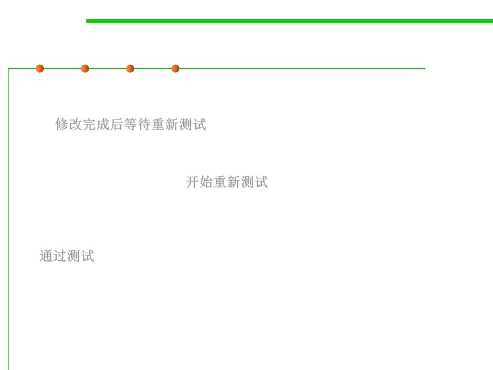

Description of Stages
7.4 Debugging
▪ Pending Retest: After the bug is fixed, it is passed back to the testing
team to get retested and the status of ‘Pending Retest’ is assigned to
it. 修改完成后等待重新测试
▪ Retest: The testing team leader changes the status of the bug, which
is previously marked with ‘Pending Retest’ to ‘Retest’ and assigns it
to a tester for retesting. 开始重新测试
▪ Verified: Once the bug is fixed and the status is changed to TEST,
the tester tests the bug. If the bug is not present in the software, he
approves that the bug is fixed and changes the status to VERIFIED.
通过测试